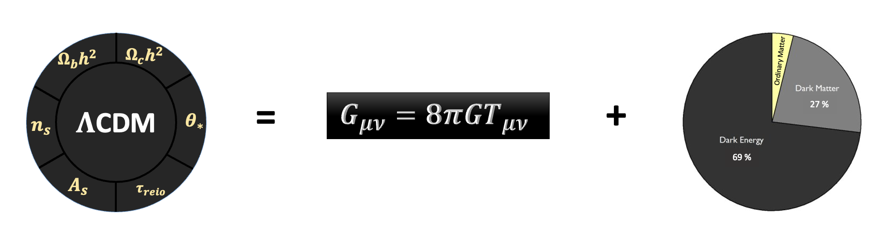

Research Interests
Theoretical & Statistical Cosmology | Cosmological Tensions | Large-Scale Structures of Universe
My research interests span over a wide range of topics in theorectical physics, including Gravitation, Cosmology and Foundational Aspects of Quantum Theory. During my PhD, I have explored various aspects of cosmology, including dark matter, dark energy, inflation, and large-scale structures in the universe, using numerical computations, Bayesian statistics, and machine learning techniques. My doctoral thesis, titled "Investigating the Impact of Peculiar Motion of Galaxies on Cosmological Inference", examines how the intrinsic motions of galaxies influence our understanding of the universe.
Cosmology is the study of structure and evolution of the whole universe treating it as a single system. The fundamental equations of cosmology are the Einstein equation and the Boltzmann equation. These equations together with the cosmological principle provide us the concordance model of cosmology, called the ΛCDM model, with only six free parameters. Our current understanding of the universe requires two unknown components to contribute to the total energy budget, dark matter and dark energy, and an initial phase of nearly exponential expansion called inflation.

Large-Scale Structures
Large-scale Structure (LSS) refers to the distribution and clustering of matter on the largest cosmic scales, encompassing galaxies, galaxy clusters, filaments, and voids. It serves as a powerful probe into the origin and evolution of structures in the universe, offering insights into the underlying cosmological model, the nature of dark matter and dark energy, and the initial conditions seeded during inflation. By studying the statistical properties of LSS—such as the two-point correlation function, power spectrum, and higher-order statistics—we can trace how tiny primordial fluctuations evolved into the complex web-like structures observed today. Upcoming large-scale surveys are expected to significantly enhance our understanding of the growth of cosmic structure across time.
Cosmological Tensions
Cosmology today is witnessing an exciting era, marked by increasingly precise observations of the Universe. However, these high-precision measurements have also revealed significant discrepancies between early- and late-Universe probes, such as the Hubble tension. These tensions challenge the standard cosmological model and suggest the possibility of new physics or the need for a deeper understanding of systematic uncertainties. I am interested in understanding and addressing these cosmological tensions from both theoretical and observational perspectives, aiming to explore whether they point toward new physics or arise from unaccounted systematics in the data.
STATISTICAL METHODS
Statistical methods are fundamental to cosmology, enabling researchers to extract meaningful insights from noisy and incomplete data. Since controlled experiments are impossible on cosmic scales, statistical techniques like Bayesian inference, and Markov Chain Monte Carlo (MCMC) are essential for parameter estimation and model selection. As upcoming surveys like LSST, Euclid, and SKA provide increasingly precise data, statistical methods will continue to play a crucial role in refining our understanding of dark matter, dark energy, and the evolution of the universe. In my PhD thesis, I have developed a Bayesian estimator to study the impact of peculiar motion of galaxies on cosmological inference. Further, we used this estimator to reconstruct the evolution of peculiar velocity with redshift.